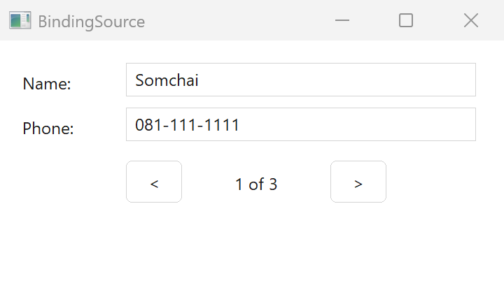

แหล่งข้อมูลผูก (BindingSource)
ในกล่องเครื่องมือ: แหล่งข้อมูลผูก · เทียบกับ WinForms: BindingSource
ที่เก็บข้อมูลหลายแถว (เหมือนตารางเล็ก ๆ) ที่ผูกกับ control ได้ - control แต่ละตัวแสดงคอลัมน์หนึ่งของ "แถวปัจจุบัน" เลื่อนแถวแล้ว control เปลี่ยนตามเอง ผู้ใช้แก้ใน control แล้วข้อมูลในแถวเปลี่ยนตาม
- DataMember (fields): ชื่อคอลัมน์ คั่นด้วยจุลภาค เช่น
name, phone - ผูก control: ตั้ง DataBindings ของ control เป็น
Id.คอลัมน์เช่นpeople.name set_rowsใส่ข้อมูล ·move_next/move_previousเลื่อนแถว ·position()อยู่แถวไหน ·add_new/remove_currentเพิ่ม/ลบ- ผูกกับตารางในฐานข้อมูลได้ - ดู ทำงานกับฐานข้อมูล

อยู่ในกล่องเครื่องมือกลุ่ม ข้อมูล (Data) - ลากมาวางแล้วมันจะไปอยู่ในแถบด้านล่างของตัวออกแบบ (ไม่ได้อยู่บนหน้าต่าง) · ในโค้ดเรียกมันว่า ui.ชื่อId ซึ่งเป็นชนิด phai_ui::ctl::BindingSource
ตัวอย่าง
1. ผูก control กับคอลัมน์
ช่อง name ตั้ง data_binding = "people.name" · phone ตั้ง "people.phone" · แหล่งข้อมูล people มี fields = "name, phone":
# Phai Studio form - docs/phaiform.md
format = 1
[form]
name = "BindingsourceDemo"
title = "BindingSource"
size = [360, 180]
start = "center"
[[control]]
kind = "label"
id = "name_label"
text = "Name:"
bounds = [16, 18, 70, 24]
[[control]]
kind = "edit"
id = "name"
bounds = [90, 16, 250, 24]
data_binding = "people.name"
[[control]]
kind = "label"
id = "phone_label"
text = "Phone:"
bounds = [16, 50, 70, 24]
[[control]]
kind = "edit"
id = "phone"
bounds = [90, 48, 250, 24]
data_binding = "people.phone"
[[control]]
kind = "button"
id = "back"
text = "<"
bounds = [90, 86, 40, 30]
on_click = "back_clicked"
[[control]]
kind = "label"
id = "place"
text = ""
bounds = [138, 90, 90, 24]
text_align = "center"
[[control]]
kind = "button"
id = "next"
text = ">"
bounds = [236, 86, 40, 30]
on_click = "next_clicked"
[[control]]
kind = "bindingsource"
id = "people"
fields = "name, phone"
[control.events]
position_changed = "people_moved"2. ใส่ข้อมูล
fn loaded(&mut self, ui: &BindingsourceDemoUi) {
// Each row in the columns' order: name, phone. The first one shows at once.
ui.people.set_rows(vec![
vec!["Somchai".into(), "081-111-1111".into()],
vec!["Malee".into(), "082-222-2222".into()],
vec!["Narin".into(), "083-333-3333".into()],
]);
self.people_moved(ui);
}3. เลื่อนไปมา
event PositionChanged เกิดทุกครั้งที่เปลี่ยนแถว - ใช้บอกว่าอยู่แถวที่เท่าไหร่:
fn back_clicked(&mut self, ui: &BindingsourceDemoUi) {
ui.people.move_previous();
}
fn next_clicked(&mut self, ui: &BindingsourceDemoUi) {
ui.people.move_next();
}
fn people_moved(&mut self, ui: &BindingsourceDemoUi) {
// PositionChanged: another row is the current one.
ui.place.set_text(&format!("{} of {}", ui.people.position() + 1, ui.people.count()));
}หน้าต่างตัวอย่างทั้งหมด: bindingsource_demo.phaiform กับ bindingsource_demo.rs ในโปรเจกต์ docs/help-src/examples/controls - รันด้วย cargo run -- bindingsource
Method ของ BindingSource
| Method | ทำอะไร |
|---|---|
bind(&self, control: impl Into<HWND>, how: Bound, column: &str) | ผูก control กับคอลัมน์ (ปกติ Phai Studio ทำให้จาก DataBindings) |
unbind(&self, control: impl Into<HWND>) | เลิกผูก control |
columns(&self) -> Vec<String> | ชื่อคอลัมน์ |
end_edit(&self) | เอาสิ่งที่แก้ใน control ใส่แถวปัจจุบันทันที |
reset_bindings(&self) | แสดงแถวปัจจุบันใน control อีกครั้ง |
rows(&self) -> Vec<Vec<String>> | ทุกแถว รวมสิ่งที่แก้ใน control แล้ว |
tagged_rows(&self) -> Vec<(usize, Vec<String>)> | ทุกแถวพร้อมตำแหน่งเดิมตอนโหลด (0 = แถวที่เพิ่มใหม่) - ใช้บันทึกกลับฐานข้อมูล |
set_rows(&self, rows: Vec<Vec<String>>) | ใส่ข้อมูลใหม่ทั้งหมด แถวแรกขึ้นใน control |
count(&self) -> usize | มีกี่แถว |
position(&self) -> usize | แถวปัจจุบันอยู่ที่เท่าไหร่ นับจาก 0 |
set_position(&self, i: usize) | ไปแถวที่ i |
move_first(&self) | ไปแถวแรก |
move_previous(&self) | ไปแถวก่อน |
move_next(&self) | ไปแถวถัดไป |
move_last(&self) | ไปแถวสุดท้าย |
current(&self) -> Option<Vec<String>> | แถวปัจจุบัน |
value(&self, column: &str) -> String | ค่าคอลัมน์ column ของแถวปัจจุบัน |
set_value(&self, column: &str, v: &str) | ตั้งค่าคอลัมน์ของแถวปัจจุบัน (control ที่ผูกไว้เปลี่ยนตาม) |
add_new(&self) -> usize | เพิ่มแถวว่างท้ายสุดแล้วไปที่แถวนั้น |
remove_current(&self) | ลบแถวปัจจุบัน |
Properties
ตั้งได้ในหน้าต่าง Properties เมื่อเลือกมันบนฟอร์ม - ตารางนี้สร้างจาก Phai Studio เอง จึงตรงกับที่เห็นในโปรแกรมเสมอ
| Property | ค่าเริ่มต้น | ทำอะไร |
|---|---|---|
| ออกแบบ | ||
| รหัส | bindingsource | ชื่อ control ในโค้ด และ #id ใน CSS |
| ข้อมูล | ||
| DataMember | - | คอลัมน์ของแถว คั่นด้วยจุลภาค: name, phone - ถ้าผูกกับตารางจะใช้คอลัมน์ของตาราง |
Events
ดับเบิลคลิกชื่อ event ในแท็บ Events ของ Properties แล้ว Phai Studio จะเขียน method ให้ (ชื่อในตารางนี้สมมติว่า Id ของมันคือ bindingsource และอยู่บนฟอร์ม MainWindow) - ชี้เมาส์ที่ชนิดของ e เพื่อดูชื่อเต็ม
| Event | ทำอะไร | method ที่ Phai Studio เขียนให้ |
|---|---|---|
| PositionChanged | แถวปัจจุบันเปลี่ยน - เลื่อนไป เพิ่ม ลบ หรือได้แถวชุดใหม่ | fn bindingsource_position_changed(&mut self, ui: &MainWindowUi) |
ลองทำเอง
- ปุ่ม "เพิ่ม" ที่เรียก
add_new()แล้วพิมพ์ชื่อใหม่ได้เลย - ปุ่ม "แสดงทั้งหมด" ที่รวมทุกแถวจาก
rows()ใส่ป้ายหรือ message_box